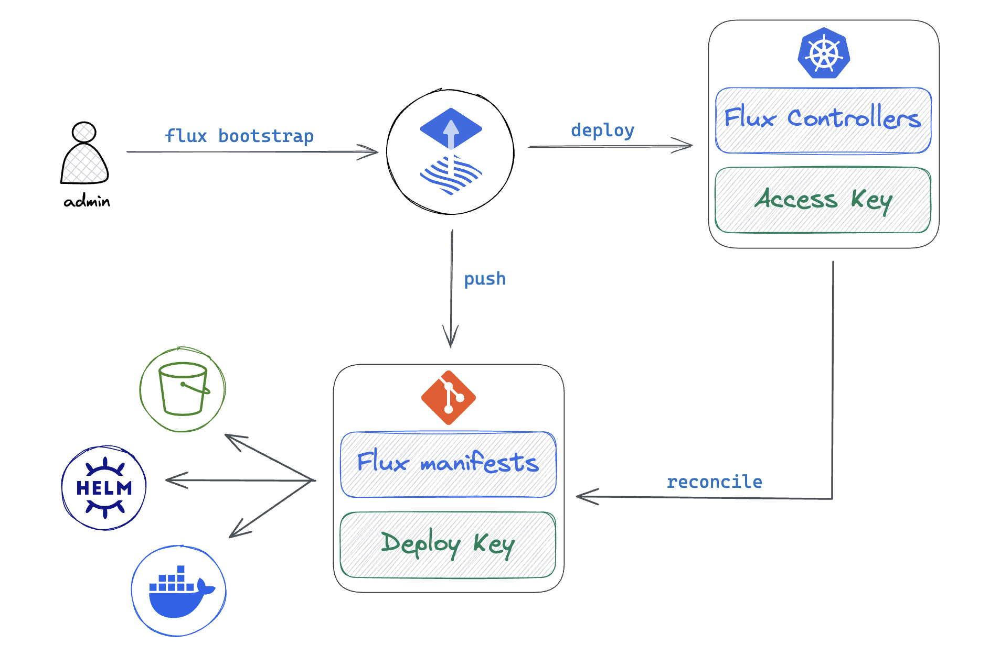

Flux Architecture
In this guide we will explore the architecture of Flux CD, and we will compare the deployment strategies of the Flux components when implementing GitOps for multi-cluster continuous delivery.
Flux components
Flux is powered by the GitOps Toolkit, a set of composable APIs and specialized tools that enable a wide range of continuous delivery use-cases, from simple Kubernetes deployment pipelines to multi-tenant/multi-env progressive delivery rollouts.
The Flux project is made out of the following components:
-
Flux CLI
A command-line tool for installing, upgrading, operating, monitoring and debugging the Flux controllers running on Kubernetes clusters.
-
Flux Terraform Provider
An infrastructure-as-code provider for bootstrapping Flux with Terraform and OpenTofu.
-
Flux APIs
A set of Kubernetes CRDs that allow defining continuous delivery workflows in a declarative manner.
-
Flux controllers
A set of Kubernetes controllers that automate all aspects of continuous delivery based on the declarative workflows defined with the Flux APIs.
Flux controllers
-
source-controller
A controller specialised in artifacts acquisition from external sources such as Git, OCI, Helm repositories and S3-compatible buckets.
-
kustomize-controller
A controller specialized in running continuous delivery pipelines for infrastructure and workloads defined with Kubernetes manifests and assembled with Kustomize.
-
helm-controller
A controller specialized in managing the lifecycle of applications packaged as Helm charts.
-
notification-controller
A controller specialized in sending and receiving continuous delivery events to/from external services.
-
image-reflector-controller
A controller specialized in scanning container registries for new image versions and OCI artifacts revisions.
-
image-automation-controller
A controller specialized in automating the update of container images and OCI artifacts to Git.
Unlike most CI/CD systems, Flux does not rely on 3rd-party tools to perform its operations and can't be used to execute arbitrary scripts or commands in the cluster. From a security perspective, Flux execution is limited to the operations defined in the Flux APIs and the controllers are designed for multi-tenancy, using Kubernetes impersonation when deploying applications on behalf of tenants.
To extend Flux beyond its built-in functions, custom controllers can be developed using the Flux controller SDK. For example, tofu-controller is a Flux controller for reconciling Terraform and OpenTofu modules.
Flux bootstrap
Bootstrap is the process of deploying the Flux controllers on a Kubernetes cluster and configuring them to watch a Git repository for changes. The bootstrap repository can contain references to other Git repos, OCI repos, Helm charts, S3-compatible buckets; together all these sources form the desired state of the cluster.
With Flux running on the cluster, all changes to the desired state are automatically reconciled, including the self-update of the Flux controllers. If the cluster state drifts from the desired state, Flux will automatically correct it, effectively undoing any changes made to the cluster outside of the GitOps workflow.

A bootstrap repository can serve multiple clusters & tenants, and can contain delivery pipelines that span across multiple environments. A typical repository structure used by platform teams to manage multiple clusters and tenants looks like this:
├── clusters
│ ├── prod1
│ ├── prod2
│ ├── staging
├── infrastructure
│ ├── base
│ ├── production
│ └── staging
└── tenants
├── team1
└── team2
The platform team can segregate the clusters add-ons from the tenants' applications.
The cluster add-ons defined in the infrastructure directory, such as admission controllers,
ingress, monitoring, logging, security policies, etc. are deployed by Flux under the
cluster admin role. The platform team can define the reconciliation order and dependencies
between the infrastructure components and the tenants' applications using the Flux dependsOn
feature.
The applications deployed on the clusters as Helm releases can be managed by various dev teams in their own repositories. The platform team can reference these repositories in the bootstrap repo and apply policies that enforce security, compliance, and best practices.
Flux multi-cluster deployment strategies
When managing a fleet of Kubernetes clusters with Flux, the platform team can choose between two deployment strategies:
-
Standalone
Flux is bootstrapped on each Kubernetes cluster.
-
Hub and Spoke
Flux is bootstrapped on a central cluster, acting as a GitOps hub.
Standalone
In the standalone mode, each Kubernetes cluster runs its own Flux controllers. This mode is suitable for most use-cases, where the clusters are reconciled independently, from the same or different bootstrap repositories.

Pros:
- Reduced attack surface, the API server of each cluster doesn't need to be exposed to external systems.
- Reduced blast radius, each cluster is self-sufficient and can operate independently.
- Suitable for hard multi-tenancy and air-gapped environments where clusters can't communicate with each other.
Cons:
- Operational overhead, each cluster needs to be bootstrapped with Flux separately.
- Maintenance overhead, each Flux instance needs to be updated independently.
- Monitoring and observability overhead, each Flux instance needs to be monitored separately, the collected metrics and events need to be aggregated.
To improve the observability of standalone instances, the platform team can configure the Flux notification-controller on each cluster to send all the continuous delivery events to a central alerting system.
To reduce the operational overhead, the platform team can integrate the Flux Terraform provider with the cluster provisioning process, ensuring that each cluster is bootstrapped with Flux as part of the cluster creation workflow.
To reduce the maintenance burden of standalone instances, the platform team can automate the Flux self-update process using GitHub Actions or Renovate bot.
In standalone mode, the Git server hosting the bootstrap repository is a Single point of failure (SPOF). The SPOF is mitigated by Flux source-controller which maintains a local cache of all external sources and can ensure that the cluster state drift detection and correction can continue even if the Git server suffers an outage.
For more information on how to configure Flux for standalone mode, see the flux2-kustomize-helm-example and the flux2-multi-tenancy repositories.
Hub and Spoke
In the Hub and Spoke mode, a central cluster acts as a GitOps hub, managing the continuous delivery for multiple Kubernetes clusters. The hub cluster runs the Flux controllers from where it reconciles the spoke clusters by connecting to their Kubernetes API servers.
Pros:
- Reduced operational and maintenance overhead, bootstrapping and updating Flux is done once on the hub cluster.
- Single pane of glass, the platform team can monitor and observe the continuous delivery for all clusters using the Flux metrics and events from the hub instance.
- Suitable when clusters are provisioned with Kubernetes Cluster API, where the hub cluster acts as a management cluster.
Cons:
- Single point of failure, the hub cluster is a SPOF for the continuous delivery for all clusters.
- Security concerns, if the hub cluster is compromised the attacker can gain access to all spoke clusters.
- Operational complexity, the platform team needs to manage the network connectivity between the hub and spoke clusters API servers.
For more information on how to configure Flux for Hub and Spoke mode, see the flux2-hub-spoke-example repository.
Hub sharding and horizontal scaling
When managing a large number of spoke clusters, the hub cluster can be sharded to distribute the reconciliation load across multiple Flux instances.

The primary Flux instance is responsible for deploying the Flux shard instances on the hub cluster and for distributing the reconciliation tasks across the shards. The bootstrap repository contains the sharding configuration, allowing the platform team to define the shard-to-cluster mapping and the reconciliation order in a declarative manner.
For more information on how to assign Flux instances to specific clusters, see the Flux sharding and horizontal scaling guide.
Conclusions
Running Flux in the standalone mode offers a higher degree of security and autonomy for the clusters at the expense of operational overhead when it comes to bootstrapping and monitoring the Flux instances.
The hub and spoke mode reduces the operational and maintenance overhead by centralizing the continuous delivery tooling on a single cluster, but introduces a single point of failure and networking complexity that can be challenging from a security perspective.
In the standalone mode, Flux vertical scaling would suffice to handle the reconciliation load of thousands of applications, while in the hub and spoke mode, Flux horizontal scaling is required due to the increased latency and network overhead when managing a large number of clusters.
Depending on the size and security constrains of the Kubernetes fleet, the platform team can choose a mix of standalone and hub-spoke modes. For example, using a hub cluster for managing the dev & ephemeral test environments and standalone instances for the production clusters.